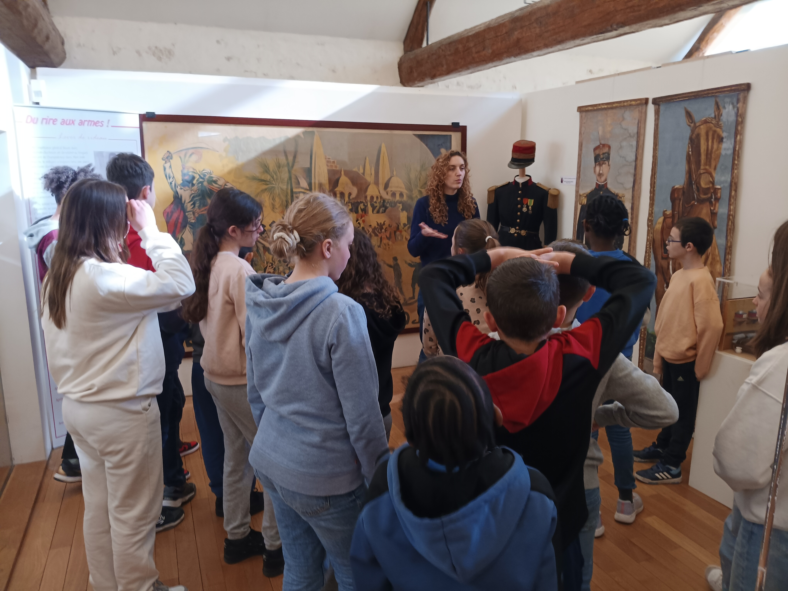
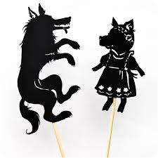

Lundi 17 mars
Aujourd’hui, nous avons interrogé la classe 7 sur leur sortie de vendredi dernier !
"Ce jour-là, la classe 7 est allée au musée du théâtre forain. La matinée a commencé par une visite guidée des collections du musée, pendant laquelle Agathe nous a fait voyager avec ses explications
Ensuite, nous avons participé à un atelier sur les bruitages avec Stéphanie. Nous avons d’abord écouté et identifié des sons et des bruits, puis nous avons essayé de les reproduire avec des objets du quotidien.
Avec ces sons, nous avons créé plusieurs univers sonores comme la forêt, la tempête ou le bateau pirate."
Mardi 18 mars
Aujourd’hui, nous sommes allés interroger les élèves de Mme Foucher au sujet de leur sortie de vendredi dernier.
Ce jour-là, ils ont visité le musée du Théâtre Forain.
Ils ont particulièrement apprécié se déguiser et découvrir des costumes inspirés de personnages de château ou de costumes traditionnels chinois. Ensuite, ils ont fabriqué des marionnettes pour réaliser un spectacle de théâtre d’ombres. Ils ont même joué un extrait de la célèbre pièce Pierre et le Loup.
Une sortie pleine de découvertes et de créativité !
Jeudi 20 mars
Aujourd’hui, en arrivant en récréation, les élèves ont eu une drôle de surprise !
Deux gros pneus, entièrement peints en vert, étaient posés au beau milieu de la cour. Intrigués, les élèves se sont aussitôt demandé à quoi ils allaient bien pouvoir servir…
S’agit-il d’un nouveau jeu ? D’un futur aménagement ? Le mystère reste entier…
Une chose est sûre : tout le monde est impatient de le découvrir !

Vendredi 21 mars
Aujourd’hui, c’est escrime !
Depuis le vendredi 28 février, 3 classes participent à des séances d’escrime tous les vendredis après-midi, encadrées par des animateurs de l’USEP.
L’escrime est un sport de combat dans lequel deux adversaires s’affrontent à l’aide d’armes blanches. Le but est de toucher son adversaire pour marquer des points, tout en se protégeant soi-même.
Ce sport développe la concentration, la rapidité, le respect des règles… et l’élégance du geste !

Paul.